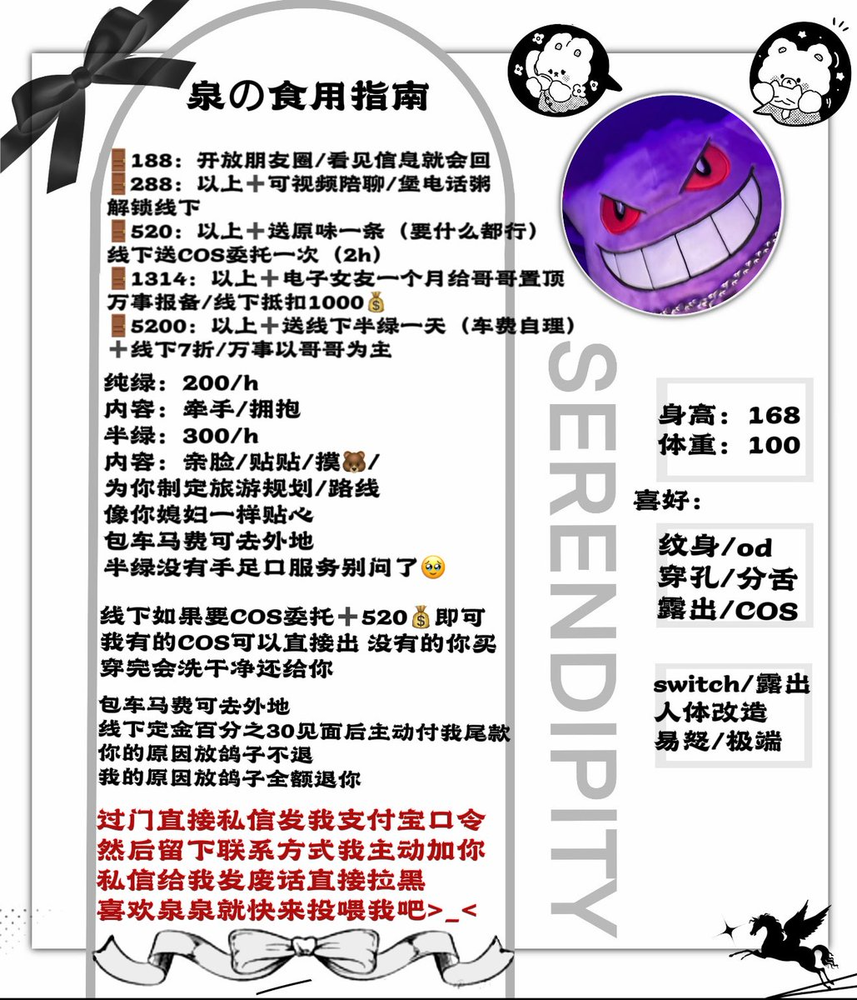
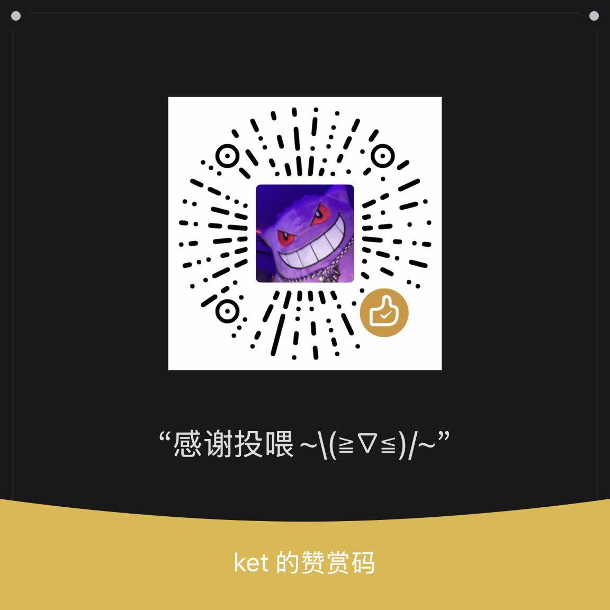

一直在后悔
@yizhizaihouhui
RT @kekeke0o0: 更新一下食用指南❤️泉泉升🚪了，以前过🚪的哥哥不用补，依旧给我转帖送一盒愈美片（直接折现）每个人都给，门槛不退看完食用指南慎重考虑后在过🚪哦 #纹身 #穿孔 #分舌 #人体改造 #sm #露出 #长沙 #爸爸活 #COS #线下 #蛇舌 #一日女友…


世泉
@kekeke0o0
更新一下食用指南❤️泉泉升🚪了，以前过🚪的哥哥不用补，依旧给我转帖送一盒愈美片（直接折现）每个人都给，门槛不退看完食用指南慎重考虑后在过🚪哦 #纹身 #穿孔 #分舌 #人体改造 #sm #露出 #长沙 #爸爸活 #COS #线下 #蛇舌 #一日女友 https://t.co/2GhOEw8ARs